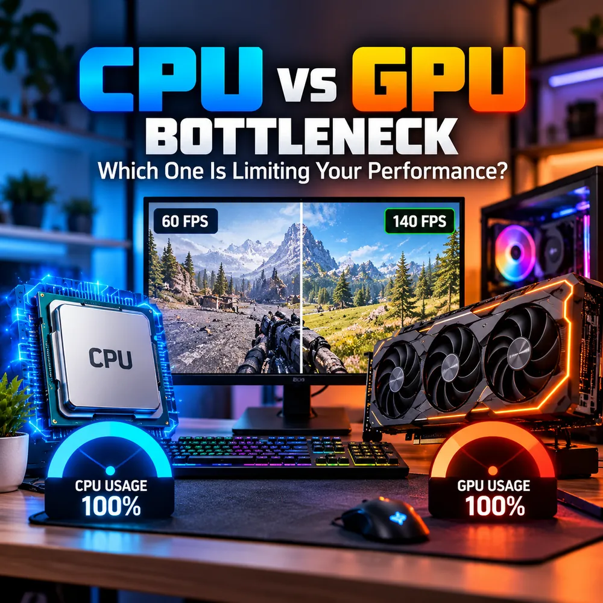

CPU vs GPU Bottleneck: Which One Is Limiting Your Performance?
Your frame rate is lower than it should be and one part of your PC is the reason. This guide shows how to tell a CPU bottleneck from a GPU bottleneck, what the usage numbers really mean, and how to use a CPU GPU bottleneck calculator without being misled by it.

The quick answer
A CPU bottleneck happens when your processor cannot prepare frames fast enough, so the graphics card sits waiting. A GPU bottleneck happens when the graphics card is the part working flat out, so the processor has spare time. In both cases the slower part sets your frame rate, and the other part simply cannot show what it is capable of.
Here is the fastest way to tell them apart while a game is running:
- GPU usage at 95 to 100% while the CPU has headroom: a GPU bottleneck. This is the healthy, expected state for most games.
- GPU usage well below 90% while one or two CPU threads are pinned: a CPU bottleneck. Your graphics card is being held back.
- Neither part is busy but performance is poor: look at RAM, storage, temperatures or a frame cap before blaming the CPU or GPU.
What a CPU bottleneck is
The CPU runs the game logic, physics, AI, draw-call preparation and a long list of background tasks. Every frame, it hands the GPU a set of instructions. If the processor takes longer to prepare those instructions than the GPU takes to draw them, the GPU idles between frames. People often search for this as a processor bottleneck or a bottleneck CPU problem, and the symptoms are consistent:
- GPU usage that drops to 50 to 70% in busy scenes.
- Frame rate that barely changes when you lower graphics settings.
- Stutter or slow 1% lows in crowded areas, large strategy maps, open-world cities and simulation games.
- One CPU thread near 100% even though the overall CPU percentage looks modest.
That last point catches many people out. A game that depends heavily on one or two threads can be completely limited by the CPU while the total usage graph in Task Manager reads 30 to 40%. Always look at per-thread or per-core usage, not just the headline number. Our guide to fixing 100% CPU usage in games covers this in more detail.
What a GPU bottleneck is
A GPU bottleneck is the reverse. The processor finishes its work quickly and waits for the graphics card to draw the frame. The signs are easy to spot:
- GPU usage sits at 95 to 100% during gameplay.
- Lowering resolution or graphics settings raises the frame rate noticeably.
- CPU usage is moderate and no single thread is pinned.
This is not a fault. If you want the best image quality, you want the GPU to be the limit, because it means your graphics card is being fully used. It only becomes a problem when the frame rate is too low for the experience you want. Our GPU bottleneck guide goes deeper on VRAM, ray tracing and settings.
CPU bottleneck vs GPU bottleneck at a glance
- What limits FPS: the CPU preparing frames, or the GPU drawing them.
- Typical GPU usage: below 90% for a CPU limit, 95 to 100% for a GPU limit.
- Effect of lowering resolution: little change for a CPU limit, a clear FPS gain for a GPU limit.
- Effect of raising resolution: often hides a CPU limit, because the GPU becomes the slower part.
- Common fixes: a faster CPU, background app cleanup or a frame cap for a CPU limit; lower settings, upscaling or a stronger GPU for a GPU limit.
Why resolution changes the answer
CPU work per frame is roughly the same at any resolution, while GPU work grows quickly as the pixel count rises. That is why a system can look CPU limited at 1080p with a fast graphics card and look GPU limited at 4K with the same parts. A quick test: drop the resolution and check the frame rate. If it hardly moves, your CPU is likely the limit. If it jumps, the GPU was. We explain the effect in full in our 1080p vs 1440p vs 4K bottleneck guide.
Both are not at 100% at the same time
It is tempting to read the two gauges in the graphic above and conclude that both parts are maxed out, so the system must be perfectly balanced. In practice, frame production is a pipeline: one stage is always the slowest, and that stage is the limit. You will sometimes see very high usage on both parts in a well-matched system, but treat a screenshot of two high numbers as a snapshot, not proof of balance. Check how the numbers behave over several minutes of normal play, and try a lower and a higher resolution as described above.
Where a CPU GPU bottleneck calculator helps
A CPU GPU bottleneck calculator estimates how well two parts match for a chosen resolution and workload. It is most useful at the planning stage, before you buy, because you can compare several combinations in a few minutes. The same idea sits behind searches like cpu bottleneck calculator, gpu bottleneck calculator, gpu cpu bottleneck calculator and bottleneck calculator cpu gpu: people want a quick sense of whether a processor and graphics card belong together.
It helps to be clear about what a calculator cannot do:
- It estimates. It does not measure your actual game, settings, drivers, RAM speed or cooling.
- A single percentage hides a lot. A 10% estimate in one game can behave very differently from the same pairing in another. Read what a good bottleneck percentage is before reacting to a number.
- It does not replace monitoring. If you already own the parts, the usage patterns above tell you more than any estimate.
Use the calculator to shortlist, and your own monitoring to confirm. If you want a quick calculator-style check before reading further, the free bottleneck calculator takes about a minute.
CPU GPU compatibility is not the same as balance
Many people search for CPU GPU compatibility or a CPU GPU combo checker and expect one answer. There are actually two separate questions:
- Will the parts physically work together? This is about the motherboard socket, chipset, RAM type, case size and power supply. It is a yes or no question, and your motherboard and GPU makers publish the specifications.
- Will the parts perform well together? This is the balance question, and it is where a bottleneck estimate is useful. Almost any modern GPU will run in a standard PCIe x16 slot, but that does not mean a budget CPU will keep a high-end card fed.
When checking GPU and CPU compatibility, handle the physical fit first, then the performance balance. Our CPU and GPU pairing guide and upgrade checklist walk through both.
Which should you upgrade first?
- Measure first. Confirm which part is the limit with the usage patterns above, in the games you actually play.
- Try free changes. Adjust resolution, upscaling, graphics settings, a frame cap and background apps. These are covered in our guide to reducing PC bottlenecks.
- Upgrade the limiting part. If the CPU is the limit, a faster processor will help most. If the GPU is the limit, a stronger graphics card is the answer.
- Check the platform. A new CPU may need a new motherboard and RAM, which changes the real cost.
Conclusion
The difference between a CPU bottleneck and a GPU bottleneck comes down to which part runs out of speed first. High GPU usage with spare CPU headroom is normal and healthy. Low GPU usage with a busy processor is the pattern that deserves action. Use a bottleneck calculator for planning, use monitoring for proof, and change one thing at a time so you know what actually helped.
Frequently Asked Questions
What is the difference between a CPU bottleneck and a GPU bottleneck?
A CPU bottleneck means the processor cannot prepare frames fast enough, so the graphics card waits and GPU usage drops. A GPU bottleneck means the graphics card is the part working at its limit, so the processor has spare capacity. The slower part sets your frame rate in both cases.
Is a GPU bottleneck bad?
Usually not. GPU usage near 100% means your graphics card is being fully used, which is normal for most games. It only matters if the resulting frame rate is lower than you want, in which case lowering settings, using upscaling or upgrading the GPU helps.
How do I know if my CPU is bottlenecking my GPU?
Watch GPU usage and per-core CPU usage while gaming. If GPU usage stays well below 90% while one or two CPU threads are close to 100%, and lowering the resolution barely changes your FPS, the CPU is probably the limit.
Can a CPU GPU bottleneck calculator be wrong?
It gives an estimate, not a measurement. Results depend on the game, resolution, settings, RAM, cooling and drivers, none of which a simple calculator can fully capture. Use it to compare combinations, then confirm with real monitoring.
Does a higher resolution reduce a CPU bottleneck?
It can hide one. Higher resolution makes the GPU work harder, so the GPU becomes the slower part and the CPU limit is less visible. The CPU is not faster, but it stops being the part that holds your frame rate back.